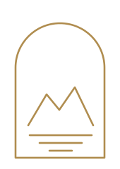
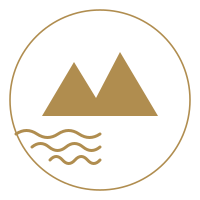

Prévia de identidade visual
Cardô Marketing · setembro de 2026 · material de estudo, não é a versão final
O conceito
A janela
A Singular Prime não vende metro quadrado: vende endereço e vista. Todo anúncio de vocês termina na mesma frase, seja "vista para o Cristo", "primeira quadra" ou "entre a praia e a Lagoa".
Por isso o símbolo é um vão de janela, e dentro dele o que se vê de Ipanema e do Leblon: a silhueta dos Dois Irmãos e a linha do mar. Traço fino, sem preenchimento, em dourado.

Direção 1 · a janela · recomendada

Direção 2 · emblema circular
2
A decisão por trás
Por que os Dois Irmãos, e não o Cristo
Parece detalhe, mas define se a marca vai parecer de vocês ou de qualquer um.
O Cristo diz Brasil
É o símbolo do Rio turístico, usado por agência de viagem, souvenir e restaurante. Não diz nada sobre o mercado imobiliário, e menos ainda sobre alto padrão. Qualquer imobiliária do país pode usar, e muitas usam.
Os Dois Irmãos dizem Ipanema e Leblon
É o cartão-postal de quem mora ali. Quem é da Zona Sul reconhece na hora; quem é de fora sente o lugar. E é exatamente o recorte onde vocês atuam, não o Rio inteiro.
A janela dá o resto
O arco lê como vão de janela, que é o produto: a vista. E dá à marca uma forma própria, que funciona sozinha na foto de perfil, no carimbo de um documento ou gravada numa placa.
Uma marca de imobiliária precisa passar em dois testes: ser reconhecida a 3 centímetros, no círculo do Instagram, e não poder ser trocada pela do concorrente. Cristo e casinha estilizada falham nos dois.
3
A assinatura
Como a marca se apresenta
Três versões, para cada situação de uso.
Horizontal · site, e-mail, rodapé
Vertical · placa, anúncio
Símbolo só · foto de perfil
4
Paleta
Clara, com dourado como acento
O fundo é areia e off-white. O dourado entra em pouca quantidade, só onde precisa brilhar. O azul profundo sustenta o contraste.
Off-white
#F8F5EF
Fundo principal de tudo
Areia
#E6DFD2
Fundo de peça e bloco
Dourado
#B08D4F
Símbolo, detalhe, fio
Azul profundo
#0E1E33
Texto e fundo escuro
Cinza pedra
#6B6A63
Texto secundário
O dourado nunca aparece em bloco grande nem em degradê. Em alto padrão, ouro em excesso empobrece: ele funciona como fio, contorno e símbolo.
5
Tipografia
Uma serifada e uma sem serifa
Títulos · Cormorant Garamond
Serifada de traço fino e contraste alto. É ela que dá o ar de sofisticação. Usada em nome de empreendimento, título de post e chamada.
Texto · Jost
Aa Bb Cc
3 suítes · 187m² · vista para a Lagoa
Rua Barão de Jaguaripe, 289 · Ipanema
Sem serifa, geométrica e neutra. Para dados do imóvel, legenda, endereço e textos de apoio.
As duas são de licença aberta, o que permite usar em marca registrada, no site e em material impresso sem pagar licença nem correr risco jurídico.
6
Aplicação
No Instagram
O símbolo na foto de perfil, e a grade com respiro e uma cor só de destaque.
@singularprime
Consultoria imobiliária de alto padrão
Ipanema · Leblon · Lagoa
CRECI 00000-J
Jaguaripe 289
Cobertura
em Ipanema
A partir de R$ 1.534.000
Rooftop
Vista para
o Cristo
45 unidades
Wellness
Academia,
sauna e spa
Curadoria Wellness Strategy
Leblon
3 suítes
187m²
Primeira quadra
A Singular Prime
Quem
somos
Rodrigo, Thiago e Elize
Guia
Como comprar
na Zona Sul
Financiamento e ITBI
7
Aplicação
No anúncio e no material impresso
Ipanema
Entre a praia
e a Lagoa
Studios e 1 quarto · 29 a 67m² · a partir de R$ 1.534.000
singularprime.com.br · CRECI 00000-J
Elize Martins
Consultora · CRECI 00000-J
(21) 00000-0000
elize@singularprime.com.br
CARTÃO · VERSO
8
Sobre esta prévia
O que isto é, e o que ainda não é
Esta é uma prévia de direção, feita a partir da logo atual de vocês e do que conversamos. Serve para vocês reagirem: o que agradou, o que não, e para onde puxar.
Na contratação, o caminho é o da apresentação: duas propostas de logo a partir do briefing, vocês escolhem uma, uma rodada de ajustes, e a entrega com todos os arquivos. O que está aqui pode virar uma das duas propostas, ou ser descartado por completo se a direção não for essa.
Já de saída, três coisas mudam em relação à logo de hoje: fundo claro em vez do azul escuro, o dourado virando detalhe em vez de preenchimento, e a marca ganhando versão para foto de perfil, que hoje fica ilegível quando reduzida ao tamanho de um círculo no Instagram.
Cardô Marketing · agencia@cardomarketing.com.br
9